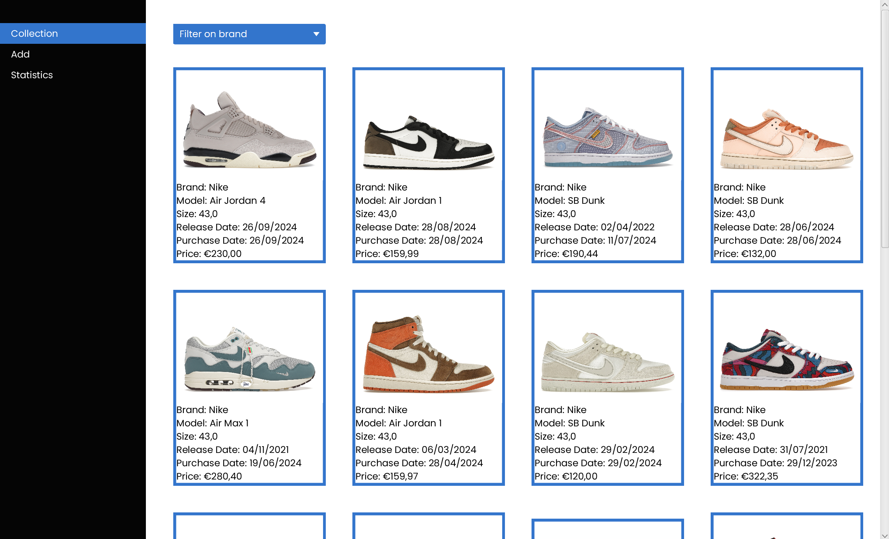
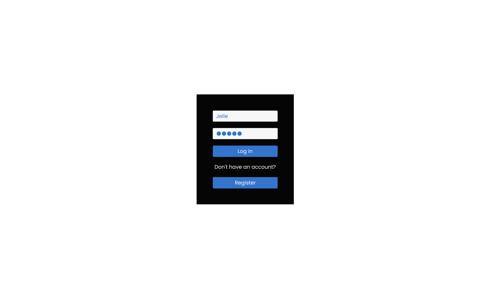
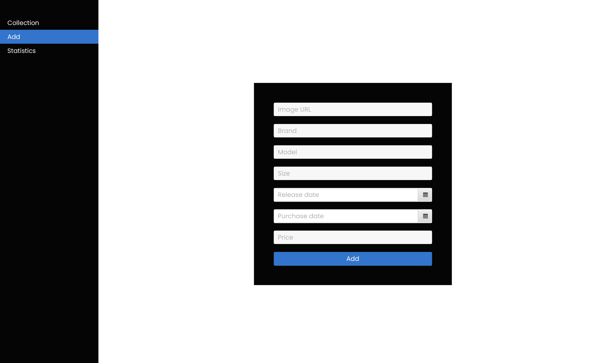
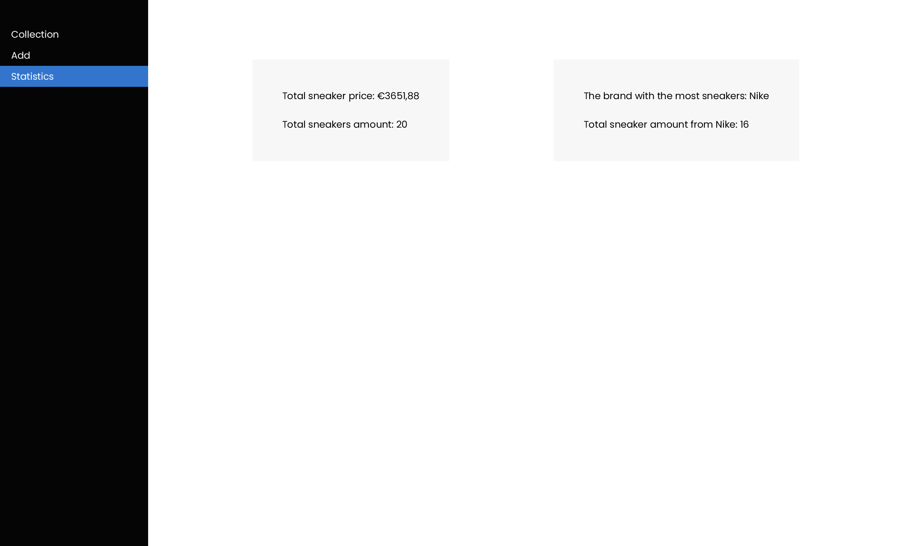

<!-- <!DOCTYPE html>
<html lang="nl">
    <head>
        <meta charset="UTF-8" />
        <meta name="viewport" content="width=device-width, initial-scale=1.0" />
        <title>Sneaker Systeem</title>
        <link rel="icon" type="image/png" href="../img/favicon.ico" />
        <link rel="stylesheet" href="../css/project.css" />
    </head>

    <body>
        <div class="top">
            <h1>Sneaker Systeem - Java, JavaFX</h1>
            <a href="../index.html" class="close-button">Terug</a>
        </div>

        <div class="description">
            <p>
                De Sneaker Applicatie is een JavaFX-gebaseerde desktopapplicatie
                waarmee gebruikers hun sneakercollectie kunnen beheren. Deze
                applicatie biedt een overzicht van sneakers, inclusief
                statistieken en de mogelijkheid om sneakers toe te voegen, bij
                te werken of te verwijderen.
            </p>
        </div>

        <div class="image-container-horizontal">
            
            
            
            
        </div>

        <div class="content-container">
            <div class="details">
                <h2>Functionaliteiten:</h2>
                <ul>
                    <li>
                        <strong>Inloggen en Registreren</strong>: Gebruikers
                        kunnen veilig inloggen of een nieuw account aanmaken om
                        toegang te krijgen tot hun persoonlijke collectie.
                    </li>
                    <li>
                        <strong>Beheer van Sneakercollectie</strong>: Voeg
                        sneakers toe, bekijk je collectie en pas gegevens aan.
                    </li>
                    <li>
                        <strong>Statistieken</strong>: Krijg inzicht in je
                        collectie met statistieken zoals de totale waarde van de
                        sneakers.
                    </li>
                </ul>
            </div>

            <div class="details">
                <h2>Technische Details:</h2>
                <ul>
                    <li>
                        <strong>Frontend</strong>: Gebouwd met JavaFX voor een
                        vloeiende en interactieve gebruikerservaring.
                    </li>
                    <li>
                        <strong>Backend</strong>: Online database voor het
                        opslaan van gebruikersgegevens en sneakerinformatie.
                    </li>
                    <li>
                        <strong>Stijlen</strong>: De applicatie gebruikt stijlen
                        en thema’s voor een moderne en intuïtieve look.
                    </li>
                </ul>
            </div>
        </div>
    </body>
</html> -->
